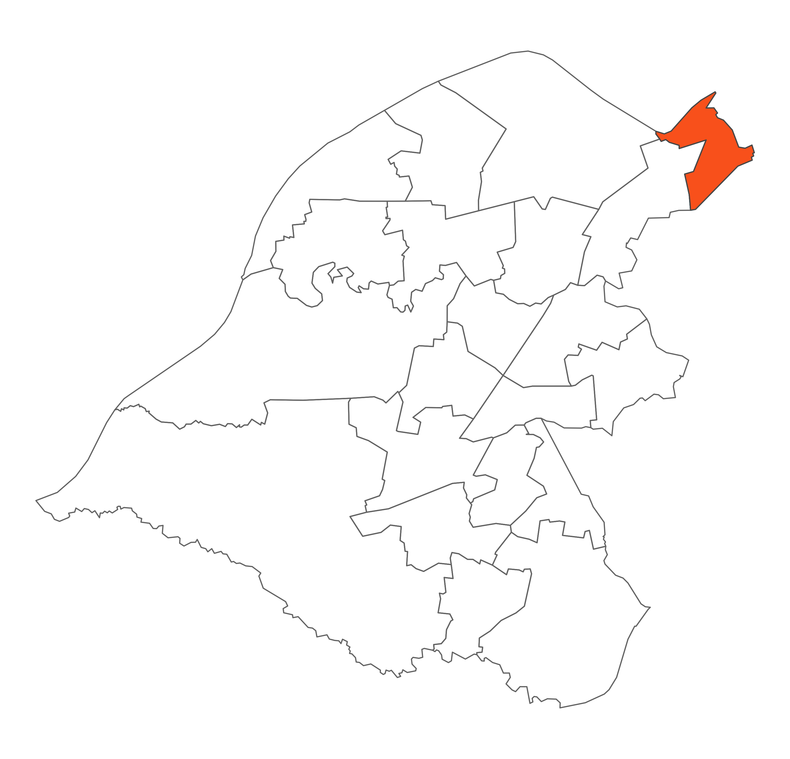

 Clifford is a small and densely populated ward at the north east tip of the Borough bordering Hulme in Manchester to the east and Whalley Range to the south. Physically it is characterised by dense residential areas of Victorian terraced housing and a diverse range of housing stock. Clifford is also known for its very diverse population, vibrant communities and active community groups, some are established and there are some newer groups. Clifford is undergoing significant transformation with the Old Trafford Master Plan and there is a lot of change to current housing.